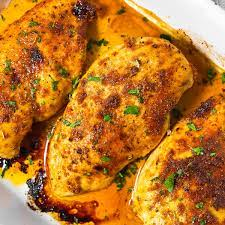

Baked Chicken

- 4 skinless, boneless chicken breast halves
- 2 Tbs. olive oil
- 1/2 tsp. coarse sea salt
- 1 pinch Creole seasoning
- 1 Tbs. chicken broth
- Preheat the oven to 400 degrees F
- Rub chicken with olive oil and sprinkle both sides with seasalt and Creole seasoning. Place in a broiler pan
- Bake in oven for 10 min. Flip chicken and cook 15 more minutes, or until juices run clear
- Move chicken to a plate
- Add chicken broth to the boiler plate to scrape off any browned bits that remain.
- Drizzle chicken with the pan sauce and serve